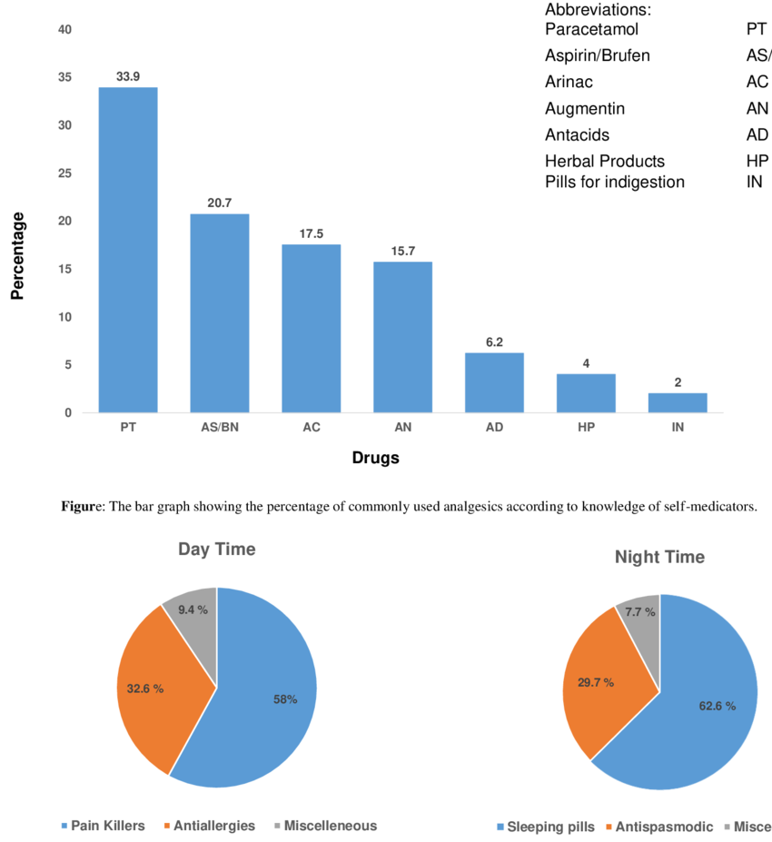
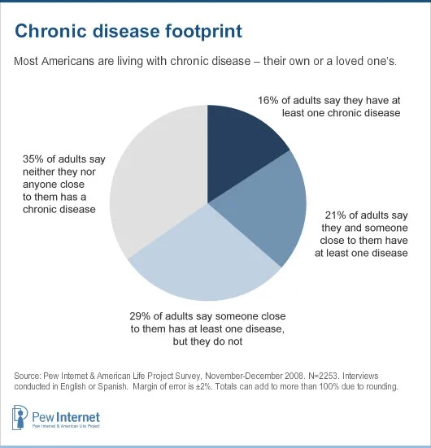

VitaSync UX/UI Case Study
A health companion app concept that supports medication management, doctor appointments, and patient–provider communication for individuals living with chronic health conditions.
SOEN 357 — Winter 2026
Introduction
Managing a chronic illness is a daily responsibility that calls for consistency, organization, and mental clarity; it is not something that should be done once a week or once a month. People with diabetes, hypertension, asthma, or arthritis frequently have to balance several prescription drugs, frequent checkups, laboratory testing, and constant communication with medical professionals. Even though technology has advanced quickly, many people still manage their health routines using disjointed solutions like paper notes, calendar alerts, or several separate apps.
Cognitive overload results from this fragmentation. Not only can missing a dose or an appointment cause physical problems, but it can also cause emotional stress and anxiety. As part of this project, I created VitaSync, a super app for medical-clinical health companions that unifies doctor communication, appointment scheduling, and medication tracking into a single digital ecosystem. The objective was to develop a structured, comforting system that lessens mental strain and fosters confidence in day-to-day health management, not just another reminder app.
Understanding the Challenge
Managing chronic health conditions involves more than just taking medicine; it involves keeping order in a repetitive, continuous system with little margin for error. To keep track of their health regimens, many patients use handwritten notes, pill organizers, dispersed phone reminders, or independent calendar apps. This disjointed strategy eventually leads to more cognitive overload and a higher chance of forgetting appointments or missing doses. Serious health consequences can result from a single forgotten reminder, particularly for conditions like diabetes or hypertension. Lack of integration and clarity amongst those tools is the problem, not a lack of tools overall.
Patients now have more options than ever thanks to the widespread availability of digital health apps, but this hasn't always translated into better results. Users are forced to switch between platforms because many of the apps that are currently available concentrate on single features like appointment scheduling or reminders. Long-term consistency is discouraged and friction is created by this frequent app switching. Furthermore, some applications, especially for older adults, are too complicated or visually overwhelming. Digital solutions run the risk of increasing stress rather than decreasing it if careful design and accessibility considerations are not taken into account.
But using a fully integrated digital system to manage chronic care has its own set of difficulties. The platform needs to support a range of medical conditions, emotional needs, and technological literacy levels. A solution that is too complicated could turn off users, while one that is too simple might not have the features they need. Layout hierarchy, typography, and interaction flow must all be carefully considered in order to strike a balance between clinical reliability and user-friendly design. As a result, VitaSync was created to integrate doctor communication, appointment scheduling, and medication tracking into a serene, medically appropriate interface that preserves functional depth while lowering cognitive load.
Research Method
I carried out research on how people deal with chronic conditions on a daily basis in order to gain a better understanding of their needs and behaviours. I investigated how people schedule appointments, keep track of their medications, and interact with medical professionals through surveys and casual interviews. The results showed that a large number of patients depend on disjointed systems, like paper notes, phone alarms, or numerous apps, which frequently results in confusion and missed doses. The emotional strain brought on by forgetting to take medication or mismanaging schedules was a common theme. The need for a centralized, organized, and comforting digital solution was identified in part by this study.
This project is heavily influenced by personal experience in addition to formal research. For a number of years, I shared a home with my grandparents, who both had numerous chronic conditions and required daily medication. I have personally seen how difficult it can be to plan medication schedules, remember dosage times, and arrange doctor visits. The procedure necessitated continuous manual tracking and was frequently overwhelming. I gained a deep understanding of the practical struggles patients encounter by witnessing these obstacles, which reaffirmed the significance of building VitaSync with simplicity, clarity, and accessibility at its core.


Personas
My research made it evident that people with chronic illnesses have different routines, difficulties, and emotional requirements. I created two personas that most accurately depict the recurrent patterns seen in how users schedule appointments, handle medications, and interact with medical professionals by combining information from surveys, informal interviews, and personal experiences. Throughout the design process, keeping both personas in mind helps guarantee that design choices are based on actual user behaviours and that the app appropriately meets the needs of patients.


User Journey
I then sketched out a normal day in the life of my character as they take care of their health. This exercise influenced how the user experience of the app integrates into everyday activities, particularly in relation to medication recall, appointment scheduling, and maintaining relationships with medical professionals.


User Flow Chart/Navigation
Before creating the user flow, my understanding of how the app would work was still fairly high-level. Laying out the main flow pushed me to think more carefully about each action a user would take while navigating the app and how different features connect together.

Sketches
I sketched out what I imagined the app would look like, which supported me in the upcoming steps of the UI creation.

Wireframes
Before making precise visual design decisions, I was able to experiment with the structure and arrangement of each screen by creating wireframes for VitaSync. I was able to concentrate on how users would navigate the app and engage with essential features like messaging, appointments, and medication tracking by keeping the designs straightforward and low-fidelity. With this method, it was simpler to test various layout concepts, iterate rapidly, and improve the overall flow without becoming sidetracked by colours, icons, or visual styling too early on.

Storyboard
To better understand how VitaSync fits into everyday life, I developed a storyboard that illustrates how a user might interact with the app in a real-world situation. This exercise helped place the app within a broader daily routine, showing how and when key features, such as reminders and medication tracking would be used in context. Storyboarding offered a way to visualize realistic usage scenarios, making it easier to identify moments where the app could provide meaningful support and reduce friction in the user’s day-to-day health management.

Inspiration Board
I created a little inspiration board to test out various VitaSync design options before entering the visual design stage. This made it easier for me to learn about typical visual patterns found in health and wellness apps and to get inspiration for layout, colour scheme, typography, and general tone.

Iteration
After that, a few designs were made and the decision of the final design (third iteration) was implemented, since it was the best fit with typical users’ behaviours.

Color Palette
Soft, serene tones of green, which are frequently connected to growth, health, and well-being, are the focal point of VitaSync's colour scheme. Green is a good choice for a healthcare-focused application where users may already be feeling stressed or overwhelmed because it is frequently associated with feelings of balance, renewal, and reassurance. Lighter mint and off-white backgrounds keep the interface feeling crisp and user-friendly, while the subdued green hues contribute to a calming visual ambiance.

Typography
Inter was chosen because of its readability and adaptability to mobile interfaces, which makes it suitable for providing health-related information in an approachable and readable manner. Its simple design ensures visual coherence throughout the application. VitaSync uses a single font family to keep the interface tidy and unified.

Clickable Prototype/App Navigation
Prototype link: https://www.figma.com/proto/sk4eSqJU5a1o3MABBcljaG/Untitled?node-id=0-1&t=qkjAz37iH4ryCpvj-1

Usability Testing
I would conduct a moderated usability test with participants who regularly attend medical appointments or manage medications in order to assess VitaSync's usability. The primary objectives would be to evaluate how simple it is for users to message a doctor, make appointments, set medication reminders, and navigate the app. Realistic tasks like sending a message, adding a medication, and checking an upcoming appointment would be required of participants. Short post-test interviews, task completion rates, and observation would all be used to gather feedback. Iterative design improvements to the interface and interaction flow would be informed by the results, which would be analyzed to find usability problems, areas of confusion, and friction in the user flow.
Reflection
The VitaSync project enabled me to see the app from the user’s perspective to solve a practical health-related issue. By conducting research, creating personas, user journeys, wireframes, and storyboards, I was able to better understand the impact of design choices on usability and user experience. This project required me to move beyond the visual aspect of design and concentrate on accessibility, simplicity, and emotional aspects, particularly for users living with chronic illnesses. Designing by sketching and low-fidelity prototyping enabled me to develop the app structure and flow while maintaining a user-centric approach to the design process.
Conclusion
VitaSync is conceptualized as a helpful digital companion that assists users in managing their medications, appointments, and communication with healthcare professionals in a more organized and trustworthy manner. By grounding the design in user research and real-life scenarios, the app addresses common pain points such as missed doses, forgotten appointments, and fragmented health management tools. The design concept demonstrates how thoughtful interaction design can contribute to improved health outcomes and a more reassuring user experience.
References
- Pew Research Center. (2010, March 24). Adults living with chronic disease. https://www.pewresearch.org/internet/2010/03/24/adults-living-with-chronic-disease/
- ResearchGate. (n.d.). Figure: The pie chart showing the percentage of commonly used drugs by self-medicators. https://www.researchgate.net/figure/Figure-The-pi-chart-showing-the-percentage-of-commonly-used-drugs-by-self-medicators_fig4_384149332
- Canadian Institutes of Health Research. (n.d.). Chronic disease and health research. https://cihr-irsc.gc.ca/e/43625.html
- Canva. (n.d.). Canva (Version web) [Design tool]. https://www.canva.com/
- Figma, Inc. (n.d.). Figma (Version web) [Design and prototyping tool]. https://www.figma.com/